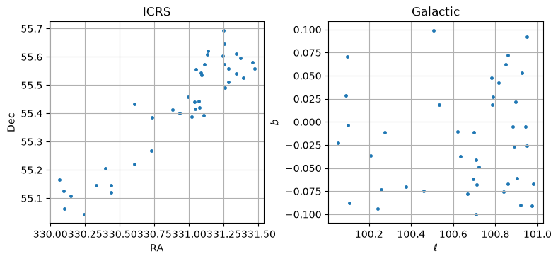
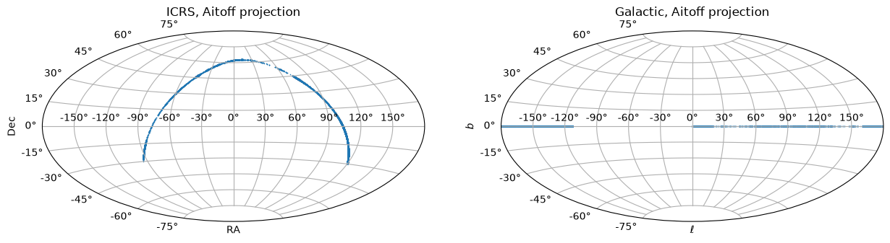

Catalog Access: Querying Sky Regions in User-Specified Coordinate Frame#
Learning Goals#
By the end of this tutorial, you will:
Understand how to use
astropy regions.SphericalSkyRegionregion instances to define a selection region in an arbitrary coordinate frame.Understand how to use the
FrameTransformerHelperhelper class included with this notebook to conveniently obtain coordinate-transformed query syntax from aSphericalSkyRegioninstance, and post-process the results table to only include objects within the selected region (in the original frame) and to add columns containing the original frame spatial coordinates.
Table of Contents#
Introduction#
This notebook demonstrates how to translate selection regions of interest defined in a non-ICRS frame, translate that region on the sky to ICRS (the typical coordinate frame used to specify object coordinates in MAST’s and other archives’ catalogs), perform a spatial query, and then ensure the results catalog is populated with the longitude and latitude information for our non-ICRS frame.
The methods demonstrated in this tutorial are broadly applicable. These methods can be used for any of MAST’s catalog holdings — from PanSTARRS (as shown in this notebook) to Roman. Furthermore, these tools can be used for coordinate transform queries of catalogs at other archives (either directly using regions.SphericalSkyRegions to specify ICRS-frame direct/bounding regions, or using the helper class/query syntax with modifications as needed).
As an example, this tutorial demonstrates how to query the MAST PanSTARRS DR2 catalog for objects within regions defined in the Galactic coordinate frame, leveraging the astropy regions package to transform the selection region from Galactic to ICRS coordinates, peforming a catalog query, and then post-processing to add Galactic coordinates to the results table (via an included helper class).
While some catalogs already provide Galactic coordinates (\(\ell, b\)), this generalized approach supports:
Selection regions defined in arbitrary, user-specified coordinate frames (such as the Heliocentric spherical coordinate system for the orbit of the GD1 stream described in Koposov et al. 2010, as provided by the gala package).
Potential performance improvements by transforming the query to use ICRS coordinates, even if the coordinate frame longitude and latitude are columns (if the database is not spatially indexed on the coordinate in questions, while ICRS position columns are).
Imports#
This tutorial makes use of the following libraries:
numpy for numerical calculations
astropy.coordinates Angle for defining angles
astropy.units to specify angular units
astroquery.mast Catalogs for querying the MAST database
pyvo for querying the MAST catalogs via TAP (extended example)
matplotlib.pyplot for plotting data
regions RangeSphericalSkyRegion to define spherical sky regions and handle coordinate frame transformations
A simple FrameTransformerHelper class to prepare catalog queries and post-process the results (adding longitude/latitude columns for the specified coordinate frame).
astropy.table to combine and manipulate result tables
time, datetime to time queries.
%matplotlib inline
import numpy as np
from astropy.coordinates import Angle
import astropy.units as u
from astroquery.mast import Catalogs
from astropy import table
import pyvo as vo
import matplotlib.pyplot as plt
import time
import datetime
from regions import RangeSphericalSkyRegion
# Helper classes for handling coordinate transformations with queries:
from frame_transformer_helper import FrameTransformerHelper
Performing Spatial Catalogs Selections with Changes of Coordinate Frame#
In this notebook, we will construct a sample of bright (\(i<18\)), blue (\(g-y < 0.8\)) stars located along the Galactic plane, combining color, magnitude, and spatial constraints, using PanSTARRS DR1 catalogs.
We will demonstrate how to perform this query using both (1) astroquery and (2) MAST’s Table Access Protocol (TAP) service using the Astronomical Data Query Language (ADQL).
Identifying blue stars on the Galactic plane#
After consulting the PanSTARRS DR2 catalogs documentation, we decide to use the
mean_object table.
This table provides the relevant photometric (columns gmeanpsfmag, imeanpsfmag, ymeanpsfmag, optimized for point sources; and imeankronmag, used to distinguish between stars and galaxies) and position (ramean, decmean) information.
We define our sample selection as:
Located within \(\pm\)0.1 degree of the Galactic plane (\(|b| \leq 0.1\)deg)
Have \(i\) band magnitudes brighter than 18
Have \(g-y\) colors less than 0.8 (the bluest, reddest filters for PanSTARRS)
Are point sources (not extended objects; point sources typically have
imeanpsfmag-imeankronmag <= 0.05, as presented in the PanSTARRS documentation).
We additionally apply quality cuts to ensure flux is detected in the \(g\), \(i\), \(y\) bands (magnitudes > -999, the missing value), and there are at least 3 detection in each of these bands (ng, ni, ny > 3; to avoid data artifacts).
Using astroquery#
To begin, we will implement this catalog search using astroquery.
We will begin by defining a small, test region of a limited \((\ell,b)\) range, as we can include only a subset of these constraints in the database query. The remaining constraints — the color cut \(g-y<0.8\), and removing extended sources — will need to be applied in-memory after obtaining the initial results table.
Defining a subset selection region#
We begin by defining a small subset, covering a limited range of \(\ell=[100,101]\) deg, and \(b=[-0.1,0.1]\) deg, using the RangeSphericalSkyRegion class. Note that we must specify the coordinate frame, as either an astropy BaseCoordinateFrame instance or a string indicating an astropy-registered coordinate frame.
# Subset selection region:
lon_range = np.array([100, 101])*u.deg
lat_range = np.array([-0.1, 0.1])*u.deg
sel_region = RangeSphericalSkyRegion(
frame="galactic",
longitude_range=lon_range,
latitude_range=lat_range,
)
sel_region
<RangeSphericalSkyRegion(
frame=galactic,
longitude_range=[100. 101.] deg,
latitude_range=[-0.1 0.1] deg
)>
Using the helper class#
We then create an instance of the FrameTransformerHelper class, which we will use to
help prepare our transformed query constraints and ensure the results are translated back to our coordinate frame (for this example, Galactic coordinates).
We specify our selection spherical sky region and our target coordinate frame for our query (ICRS).
transf_helper = FrameTransformerHelper(
sel_region=sel_region,
frame_target="icrs"
)
This transformation helper contains a property sel_region_target that represents the transformation of our region into the ICRS coordinate frame:
transf_helper.sel_region_target
<RangeSphericalSkyRegion(
frame=icrs,
longitude_bounds=<LuneSphericalSkyRegion(center_gc1=<SkyCoord (ICRS): (ra, dec) in deg
(91.94042232, 20.2900295)>, center_gc2=<SkyCoord (ICRS): (ra, dec) in deg
(272.45586549, -19.41540611)>)>,
latitude_bounds=<CircleAnnulusSphericalSkyRegion(center=<SkyCoord (ICRS): (ra, dec) in deg
(192.85947789, 27.12825241)>, inner_radius=89.9 deg, outer_radius=90.1 deg)>
)>
This is a convenience method for other internal helper processing that is equivalent to transforming the original region directly:
sel_region.transform_to("icrs")
<RangeSphericalSkyRegion(
frame=icrs,
longitude_bounds=<LuneSphericalSkyRegion(center_gc1=<SkyCoord (ICRS): (ra, dec) in deg
(91.94042232, 20.2900295)>, center_gc2=<SkyCoord (ICRS): (ra, dec) in deg
(272.45586549, -19.41540611)>)>,
latitude_bounds=<CircleAnnulusSphericalSkyRegion(center=<SkyCoord (ICRS): (ra, dec) in deg
(192.85947789, 27.12825241)>, inner_radius=89.9 deg, outer_radius=90.1 deg)>
)>
Obtaining transformed query spatial constraints#
We now need to use this transformed region to determing our spatial constraints.
Currently, the astroquery.mast Catalogs module only supports cone searches. Thus, we will need to use the bounding circle of this transformed region.
Our helper class can provide specifically formatted spatial constraints using the get_bounds_constraints() method. The arguments specify the search type (bounding circle,
bounding lon/lat, polygon), the output format (either “ADQL” or “astroquery.mast”),
and the column names for longitude, latitude in the database table (“keys_pos_target”; for the PanSTARRS mean object table, these are raMean, decMean
We now use this method to obtain the bounding circle constraints for use with astroquery.
spatial_constraints = transf_helper.get_bounds_constraints(
search_type="bound_circle", output_format="astroquery.mast",
)
spatial_constraints
{'coordinates': <SkyCoord (ICRS): (ra, dec) in deg
(330.70354523, 55.35053603)>,
'radius': <Angle 0.5099017 deg>}
Constructing and submitting the query#
We now submit the full query using the Catalogs.query_criteria() method, as we will be using a mix of spatial and non-spatial filters. We then apply the post-processing cuts (as noted above) on the preliminary table, to obtain our final sample in this subset region.
# Submit query:
start = time.time()
results = Catalogs.query_criteria(
collection="ps1_dr2",
catalog="mean_object",
**spatial_constraints,
select_cols=["objID", "raMean", "decMean",
"gMeanPSFMag", "iMeanPSFMag", "yMeanPSFMag",
"iMeanKronMag"], # List of columns to return
iMeanPSFMag=["<18", ">-999"], # i < 18; >-999 (missing mag); i band constraint
gMeanPSFMag=">-999", # mag > -999; missing magnitudes are -999
yMeanPSFMag=">-999", # mag > -999; missing magnitudes are -999
iMeanKronMag=">-999", # mag > -999; missing magnitudes are -999
ng=">3", # ng > 3; Number of detections in g
ni=">3", # ni > 3; Number of detections in i
ny=">3", # ny > 3; Number of detections in y
limit=100000, # Maximum number of rows to return
)
end = time.time()
print(f"Elapsed time: {str(datetime.timedelta(seconds=end-start))}")
# Note: the returned table column names are all lower case,
# which we use below.
# Apply post-process cuts:
# 1. Distinguish stars from extended objects using
# difference of PSF, Kron magnitudes
results = results[
(results['imeanpsfmag'] - results['imeankronmag']) <= 0.05
]
# 2. Apply color cut
# Copy original catalog for reference:
results = results[
(results['gmeanpsfmag'] - results['ymeanpsfmag']) < 0.8
]
len(results)
Elapsed time: 0:00:03.874060
204
Using the helper class to transform and trim the results#
Finally, we will use the helper class to post-process the returned table using the helper’s parse_results() method:
As we used a bounding circle for our query, we need to remove entries outside our specified region.
To easily work with our results, the helper class will also add derived columns containing the transformed coordinates. This requires the database position columns to be specified. Here, we set
keys_pos_target=["raMean", "decMean"].
By default, the names for the derived columns will be inferred from the coordinate frame longitude/latitude names. However, custom names can be specified using keys_pos_orig (e.g., keys_pos_orig=["l_derived", "b_derived"]). The default units of the output coordinates will be degrees; this can be customized by setting units_orig to some other astropy angular unit.
results = transf_helper.parse_results(
results,
keys_pos_target=["ramean", "decmean"]
)
results
| objid | ramean | decmean | gmeanpsfmag | imeanpsfmag | ymeanpsfmag | imeankronmag | l | b |
|---|---|---|---|---|---|---|---|---|
| deg | deg | mag | mag | mag | mag | deg | deg | |
| int64 | float64 | float64 | float32 | float32 | float32 | float32 | float64 | float64 |
| 174173304387015951 | 330.4386968484305 | 55.14609511054367 | 14.9612 | 14.3322 | 14.2051 | 14.3733 | 100.25666651226535 | -0.0733239967537609 |
| 174153300974792642 | 330.09746041459704 | 55.12664846899192 | 14.4471 | 13.7693 | 13.6501 | 13.8123 | 100.08924565275774 | 0.028639223390290715 |
| 174243303985338935 | 330.39852372376544 | 55.2069012503039 | 14.7298 | 14.1937 | 13.9555 | 14.2316 | 100.27484352646091 | -0.010927951631761761 |
| 174053302446793639 | 330.24468579610266 | 55.04413099821821 | 14.3659 | 13.8669 | 13.7115 | 13.8605 | 100.10664775665033 | -0.08800943466668062 |
| 174073301024487454 | 330.10241823663506 | 55.0639590939772 | 13.05 | 16.9829 | 16.3765 | 17.093 | 100.0536271259632 | -0.023026302327829262 |
| 174123301453439176 | 330.14540262047836 | 55.1070899557265 | 14.7468 | 14.1746 | 14.0548 | 14.1708 | 100.09928478725283 | -0.0035091430797302824 |
| 174263306037985069 | 330.60380323645705 | 55.22036453119728 | 14.451 | 13.9382 | 13.696 | 13.9642 | 100.37664058463054 | -0.07038129371668994 |
| 174143304395985727 | 330.43960598656327 | 55.12089732473622 | 14.7507 | 14.1011 | 13.9754 | 14.1438 | 100.24195452440424 | -0.09378753501098032 |
| 174173303324476748 | 330.33254952 | 55.14684059 | 10.8807 | 10.2023 | 11.6217 | 13.3527 | 100.20862969354452 | -0.03627276030493398 |
| ... | ... | ... | ... | ... | ... | ... | ... | ... |
| 174833312484521721 | 331.24844576 | 55.69252056 | 14.8575 | 14.3566 | 14.1632 | 14.3965 | 100.95130637967985 | 0.09178800297733512 |
| 174493310413019407 | 331.04128996 | 55.41559535 | 15.3906 | 14.8938 | 14.6785 | 14.9507 | 100.69289120671188 | -0.06196039125780394 |
| 174503310746027019 | 331.07459761198743 | 55.42194032359174 | 14.9289 | 14.39 | 14.1417 | 14.4219 | 100.71187408742465 | -0.06806709088980577 |
| 174723312420544300 | 331.2420624192428 | 55.6030253920621 | 15.0472 | 14.5133 | 14.2928 | 14.5444 | 100.89550457591672 | 0.021727161602114936 |
| 174643310880142655 | 331.08804422 | 55.53496295 | 14.4219 | 13.9337 | 13.6689 | 13.9497 | 100.78502745035131 | 0.018424365917864963 |
| 174663314701059833 | 331.47016886 | 55.55760231 | 14.2557 | 13.7873 | 13.6022 | 13.8174 | 100.97284241340091 | -0.09099780591410377 |
| 174723311320329719 | 331.132046 | 55.60750604 | 13.844 | 13.4918 | 13.3715 | 13.5626 | 100.84805657407185 | 0.062113436088432 |
| 174553309943701839 | 330.99436906 | 55.45927257 | 14.3775 | 14.0666 | 13.9218 | 14.0971 | 100.69740207855197 | -0.011010456369010165 |
| 174743311344916461 | 331.13450117 | 55.62144825 | 13.038 | 15.8893 | 15.5783 | 15.9631 | 100.8574324052183 | 0.07252505125748354 |
Our final sample in this subset region is small (41 objects).
Visualizing the subset region objects#
The targets selected in this subset Galactic longitude/latitute range are shown below in the ICRS (database) and Galactic (selection) frames:
fig, axes = plt.subplots(ncols=2, figsize=(9, 3))
axes[0].set_title("ICRS")
axes[0].set_xlabel("RA")
axes[0].set_ylabel("Dec")
axes[0].grid(True)
axes[0].scatter(
results["ramean"], results["decmean"],
marker=".", s=50, lw=0
)
axes[1].set_title("Galactic")
axes[1].set_xlabel(r"$\ell$")
axes[1].set_ylabel(r"$b$")
axes[1].grid(True)
axes[1].scatter(
results["l"], results["b"],
marker=".", s=50, lw=0
)
fig.subplots_adjust(top=0.95, bottom=0.0, wspace=0.3)
plt.show()

As this individual chunk query took about 30 seconds, it would take about 2.5 hours query over all chunks; we leave iterating over all chunks as an exercise to interested readers.
However, MAST’s PanSTARRS TAP service runs on a much more powerful database, making it possible to much more quickly iterate over all subsets to obtain the full sample across the whole Galactic plane, as shown below.
Using TAP#
We now demonstrate how to implement this search using ADQL to query MAST’s PanSTARRS TAP service.
This advanced query patterns possible with ADQL streamline this search, enabling us to avoid in-memory post-filtering (for the color and star/extended object cuts).
However, as currently this TAP service only supports cone searches, we will still need to chunk over multiple longitude ranges.
Querying over the full Galactic plane using TAP#
In this case, we’ll proceed directly iterating over all longitude ranges.
First, we connect to the MAST PanSTARRS DR2 TAP service.
# Use `pyvo` to connect to the MAST PanSTARRS TAP service:
TAP_service = vo.dal.TAPService(
"https://mast.stsci.edu/vo-tap/api/v0.1/mast_catalogs/"
)
Again, we will access the mean object catalog (mean_object here; see the PanSTARRS DR2 catalogs documentation), which contains all the columns we will need.
(Note: this TAP service is backed by a new, more powerful database. The column names in this database are entirely lowercase, but are otherwise equivalent to the columns of the legacy database as documented above.)
We now construct our query, including the color/magnitude constraints and star/extended object separation. As an overview, our query is constructed as follows.
The table, ps1_dr2.mean_object, is specified using the “FROM” statement.
We specify the coluns to be returned (objid, ramean, decmean, gmeanpsfmag, imeanpsfmag, ymeanpsfmag, imeankronmag) using the “SELECT” statement.
The query constraints are specified in the “WHERE” statement, with multiple constraints linked using “AND”.
This includes:
the cone search (as in the “CONTAINS(…)” clause; note that for ADQL, the radius must be expressed in degrees),
requiring the \(g\), \(i\), \(y\) mean PSF magnitudes and \(i\) mean Kron magnitude to be present (cutting objects that have any of these values missing),
the PanSTARRS-specific cut to select stars (
imeanpsfmag - imeankronmag <= 0.05), andthe \(g-y\) color and \(i\) magnitude cuts.
As before, for each longitude chunk, we (1) define the subset region, (2) leverage the helper to define the ADQL-specific spatial constraint syntax, (3) integrate this into the full query, and (4) query the database and obtain the result, and (5) cut back to our selection region using the helper.
Because we can perform all non-spatial filtering server-side, we use wider longitude ranges (5 degrees) in this case (though still relatively small to ensure no truncation of returned rows).
Note! We are iterating over 72 queries; this cell will take approximately 90 seconds to finish running.
# Selection regions:
# Same latitude range for all chunks
lat_range = np.array([-0.1, 0.1])*u.deg
# Prepare aggregate table:
results_tap = None
start = time.time()
for lon in range(72):
# Define subset longitude range:
lon_range = np.array([lon, lon+1])*5*u.deg
# Define subset spherical region:
sel_region = RangeSphericalSkyRegion(
frame="galactic",
longitude_range=lon_range,
latitude_range=lat_range,
)
# Define transform helper:
transf_helper = FrameTransformerHelper(
sel_region=sel_region,
frame_target="icrs"
)
# Obtain query spatial constraints:
spatial_constraints = transf_helper.get_bounds_constraints(
search_type="bound_circle", output_format="ADQL",
keys_pos_target=["ramean", "decmean"],
)
# Specify query
# Note: ADQL comments are preceded by "--"
adql_query = f"""
SELECT objid, ramean, decmean,
gmeanpsfmag, imeanpsfmag, ymeanpsfmag,
imeankronmag
FROM ps1_dr2.mean_object
WHERE {spatial_constraints} -- search constraints from the helper
AND imeanpsfmag < 18 -- magnitude cut
AND (gmeanpsfmag-ymeanpsfmag) < 0.8 -- color cut
AND (imeanpsfmag - imeankronmag) <= 0.05 -- distinguish stars from extended objects
AND imeanpsfmag > -999 -- mag > -999; missing magnitudes are -999
AND gmeanpsfmag > -999 -- mag > -999; missing magnitudes are -999
AND ymeanpsfmag > -999 -- mag > -999; missing magnitudes are -999
AND imeankronmag > -999 -- mag > -999; missing magnitudes are -999
"""
# Submit query to the MAST TAP service:
job = TAP_service.run_async(adql_query)
# Retrieve results:
results_tap_chunk = job.to_table()
# Parse results & restrict to original region:
results_tap_chunk = transf_helper.parse_results(results_tap_chunk)
# Combine with the full results set:
if results_tap is None:
results_tap = results_tap_chunk
else:
results_tap = table.vstack([results_tap, results_tap_chunk])
end = time.time()
print(f"Elapsed time: {str(datetime.timedelta(seconds=end-start))}")
# Ensure all entries are unique:
results_tap = table.unique(results_tap, keys="objid")
results_tap
/home/runner/micromamba/envs/ci-env/lib/python3.13/site-packages/pyvo/dal/query.py:403: DALOverflowWarning: Results truncated due to server limits. Consider setting a maxrec value.
warn("Results truncated due to server limits. Consider "
Elapsed time: 0:01:31.318323
| objid | ramean | decmean | gmeanpsfmag | imeanpsfmag | ymeanpsfmag | imeankronmag | l | b |
|---|---|---|---|---|---|---|---|---|
| deg | deg | mag | mag | mag | mag | deg | deg | |
| int64 | float64 | float64 | float32 | float32 | float32 | float32 | float64 | float64 |
| 72001200013223769 | 120.00131469904031 | -29.997081841796135 | 15.7394 | 15.1145 | 14.981 | 15.161 | 247.08103767408764 | -0.04555065009153811 |
| 72001200684165401 | 120.06841472723237 | -29.995696919616464 | 15.2666 | 14.6233 | 14.4907 | 14.6652 | 247.11044461809476 | 0.0045912063560663435 |
| 72001200956252668 | 120.0956245894987 | -29.998025913661344 | 15.242 | 14.6488 | 14.5247 | 14.7048 | 247.12483503616158 | 0.023396994510247286 |
| 72011199430687271 | 119.94304480361075 | -29.985860720768944 | 14.0489 | 13.4376 | 13.3462 | 13.4685 | 247.04495553333217 | -0.0825772280946197 |
| 72011200126627280 | 120.01264330895721 | -29.9857925217605 | 14.6645 | 14.0704 | 13.9188 | 14.1092 | 247.0765987945898 | -0.03126727637247311 |
| 72011200843455834 | 120.08433206969568 | -29.98705283174382 | 15.0164 | 14.3621 | 14.2419 | 14.3994 | 247.1103560216468 | 0.02086286194769272 |
| 72011201614017443 | 120.16137299352742 | -29.985733088628248 | 14.6284 | 14.2434 | 14.1624 | 14.2586 | 247.14439713314678 | 0.07827055962941741 |
| 72011201856516198 | 120.18563810356255 | -29.986748076707087 | 16.8427 | 16.3088 | 16.1026 | 16.3312 | 247.15634245426213 | 0.09559276915387996 |
| 72021199690015286 | 119.96899020537775 | -29.979157187522375 | 16.1082 | 15.6401 | 15.433 | 15.699 | 247.0510676721462 | -0.05993589389327513 |
| ... | ... | ... | ... | ... | ... | ... | ... | ... |
| 183540135539655039 | 13.55399080646288 | 62.953577896093456 | 14.9378 | 14.3906 | 14.1565 | 14.42 | 123.24772299257917 | 0.0835337399315858 |
| 183540137820673234 | 13.782092015587033 | 62.952067722834165 | 14.4656 | 14.1926 | 14.1153 | 14.2356 | 123.35145692792221 | 0.08332636565422787 |
| 183540143971627343 | 14.397157786737592 | 62.95549709218812 | 15.454 | 15.0319 | 14.8573 | 15.0816 | 123.6310156048488 | 0.09209872977637203 |
| 183540145332737422 | 14.533260044303136 | 62.955554050323805 | 15.3289 | 14.8672 | 14.68 | 14.914 | 123.69287825157329 | 0.09369897260282552 |
| 183550128469189483 | 12.846917335297487 | 62.96561080642373 | 14.8221 | 14.2626 | 14.0473 | 14.3019 | 122.92621615693002 | 0.09386377833133315 |
| 183550134613881319 | 13.461443650822023 | 62.95879460196472 | 14.7587 | 14.2299 | 14.0063 | 14.2486 | 123.20559398082449 | 0.08832648911503542 |
| 183550137023539109 | 13.702378507245434 | 62.96529891351043 | 14.3178 | 13.8239 | 13.6261 | 13.8501 | 123.3150384892771 | 0.09605939851848017 |
| 183550139933169430 | 13.993353995654445 | 62.96556024908344 | 16.1147 | 15.72 | 15.536 | 15.7852 | 123.44727548135715 | 0.09835111784095454 |
| 183550143165376539 | 14.316500813865918 | 62.963096929789145 | 15.4421 | 14.9939 | 14.8114 | 15.0204 | 123.59418018730264 | 0.09884374404115584 |
Visualizing TAP results across the full Galactic plane#
We now display our final sample using a full-sky Aitoff projection, first in ICRS (left) and then Galactic (right) coordinates.
(Note that the columns from the TAP results table have units.)
fig, axes = plt.subplots(
ncols=2,
figsize=(15, 5),
subplot_kw=dict(projection="aitoff")
)
axes[0].set_title("ICRS, Aitoff projection", pad=15)
axes[0].set_xlabel("RA")
axes[0].set_ylabel("Dec")
axes[0].grid(True)
axes[0].scatter(
Angle(results_tap["ramean"]).wrap_at(180 * u.deg).radian,
Angle(results_tap["decmean"]).radian,
marker=".", s=5, lw=0
)
axes[1].set_title("Galactic, Aitoff projection", pad=15)
axes[1].set_xlabel(r"$\ell$")
axes[1].set_ylabel(r"$b$")
axes[1].grid(True)
axes[1].scatter(
Angle(results_tap["l"]).wrap_at(180 * u.deg).radian,
Angle(results_tap["b"]).radian,
marker=".", s=5, lw=0
)
fig.subplots_adjust(top=0.95, bottom=0.0)

We can see the observational limitation of PanSTARRS (observing only Decl > -30 degrees) clearly in the left panel (showing ICRS), while the Galactic coordinates of the right panel very closely follow the Galactic midplane (as expected given our spatial constraint).
Additional Resources#
Astropy Coordinate Transformations#
The
astropy.coordinatesdocumentation provides full details about transforming between coordinate frames using astropy classes.Custom coordinate frames can be defined for use with the
astropy.coordinatesfunctionality. To support transformations between custom frames and other frames such as ICRS, it is also necessary to define a transformation to transform between the custom frame and (at least) one of frames included inastropy.coordinates. See theastropy.coordinatesdocumentation for full details.
Astroquery.mast#
Access to MAST holdings, including catalogs, through the Astropy-affiliated astroquery package.
A full list of available MAST Astroquery catalog services is available through the astroquery documentation.
Table Access Protocol (TAP) & the Astronomy Query Data Language (ADQL)#
Documentation for
pyvo, a package to retrieve astronomical data available from archives that support standard IVOA virtual observatory service protocols.Documentation on ADQL, covering the specifications of this IVOA standard for querying astronomical data in tabular format, with geometric search support.
Documentation on TAP, the IVOA standard for RESTful web service access to tabular data.
PanSTARRS 1 DR 2#
See the PanSTARRS documentation for full details regarding PanSTARRS DR2 catalogs.
Citations#
If you use astropy for published research, please cite the
authors. Follow these links for more information about citing astropy:
If you use PanSTARRS data accessed through MAST for published research, please include the following acknowledgements, found at the following links:
About This Notebook#
Authors: Sedona Price
Keywords: Tutorial, coordinate frames, astroquery, TAP
Last updated: August 2026